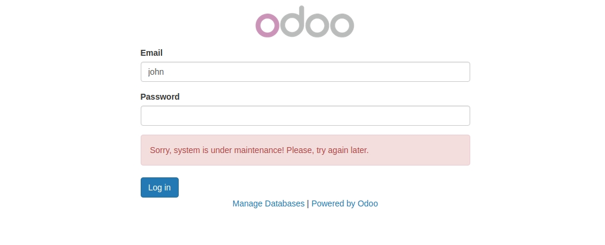
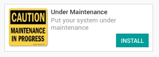
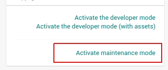

<section class="oe_container">
    <div class="oe_row oe_spaced">
        <h2 class="oe_slogan" style="color:#875A7B;">Odoo Under Maintenance</h2>
        <h3 class="oe_slogan">You can easily put your system under maintenance mode.</h3>
        <div class="oe_demo oe_picture oe_screenshot">
            
        </div>
    </div>
</section>

<section class="oe_container oe_dark">
    <div class="oe_row oe_spaced">
        <h2 class="oe_slogan" style="color:#875A7B;">Features</h2>
        <div class="oe_span6 text-justify oe_mt32">
            <ul>
                <li>Only administrator account can access the system.</li>
                <li>Only administrator account can activate maintenance mode.</li>
                <li>Other users get logged out immediately after activating maintenance mode.</li>
                <li>Gives administrator the chance to fix/configure the system without intervention.</li>
            </ul>
        </div>
        <div class="oe_span6">
            
        </div>
    </div>
</section>

<section class="oe_container">
    <div class="oe_row oe_spaced">
        <h2 class="oe_slogan" style="color:#875A7B;">Technical Requirements</h2>
        <div class="oe_span6">
            
        </div>
        <div class="oe_span6 text-justify oe_mt32">
            <h4>Install <code>simplejson</code> python package dependency.</h4>
            <h4>Run <code>pip</code> command in terminal:</h4>
            <code>sudo -H pip install simplejson</code>
        </div>
    </div>
</section>

<section class="oe_container oe_separator">
</section>
